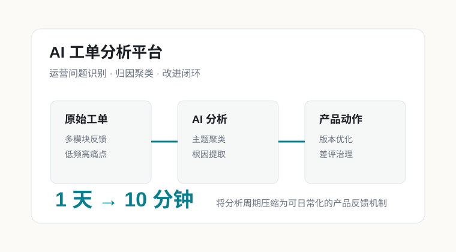
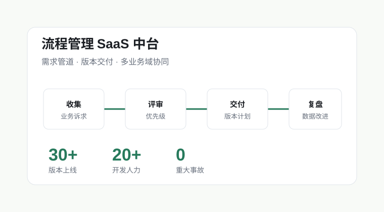
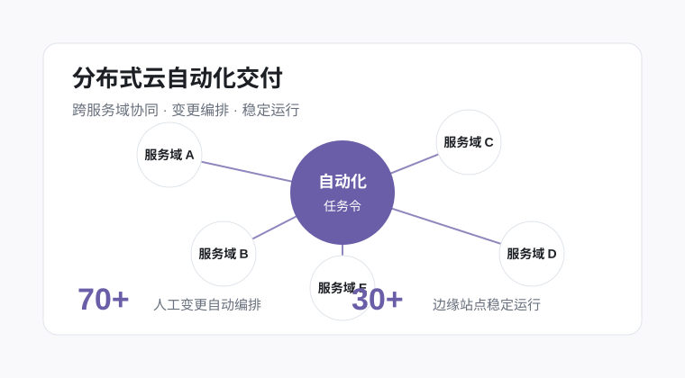

质量与流程 IT · 版本需求分析师 / 项目经理 / 运营经理
管理 20+ 开发人力需求管道，负责流程管理中台版本交付；孵化流程智能问答助手与 AI 工单分析平台。
8 年软件研发、云服务运维与产品交付经验，近年聚焦流程管理中台、AI 应用落地、需求治理和跨部门项目推进。

masterPortfolio 风格适合把技能显式铺开，但这里将“技术栈”服务于产品交付叙事。
管理 20+ 开发人力需求管道，负责流程管理中台版本交付；孵化流程智能问答助手与 AI 工单分析平台。
负责分布式云服务运维体系、自动化交付专项、IDaaS 统一身份认证和工业云解决方案交付。

用需求治理和版本机制支撑多业务域流程落地，保持 30+ 版本稳定交付。
将运营分析效率从 1 天提升至 10 分钟，让用户反馈进入产品迭代闭环。

协调 5 个服务域，把 70+ 人工变更编排为自动化流程，支撑边缘站点稳定运行。
简历讲交付结果，这一页补充更立体的个人侧面：篮球队长与组织者、年会唱歌和 rap、以及家里的猫。